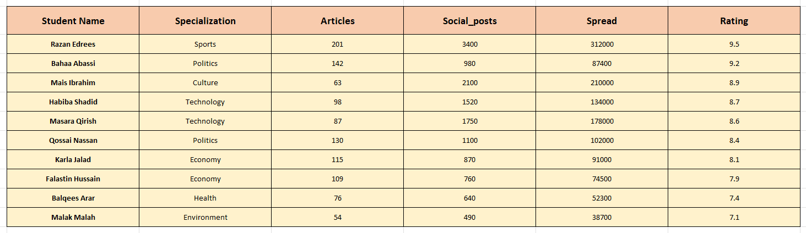

هذا المشروع هو عبارة عن مشروع تحليل وإظهار بيانات لطلبة مساق مدخل في البرمجة لأغراض صحفية، حيث يعرض المشروع بيانات عدد من طلبة المساق ويظهر عمر كل طالب والتخصص الصحفي الذي ينشط به، فبعض الطلبة يركز على صحافة الرياضة وبعضهم ينشط في صحافة الاقتصاد، واخرون يعملون على مشاريع في صحافة الأخبار والسياسة، وطالبتين عملتا على مشاريع ثقافية تتناول بيانات الأدباء الفلسطينيين والمشروع الاخر يحلل بيانات المراكز الثقافية..
المحاضر أمجد خليل عمل على تدريس هذا المساق باستخدام برمجة لغة البايثون وجمع البيانات من خلال إكسل، ثم قام باستخدام أدوات الذكاء الاصطناعي في عمليات تحليل البيانات واظهار القيم العليا لأداء الطلبة وتبيان المعدل في قيم مختلفة..
جدول البيانات للطلبة:
